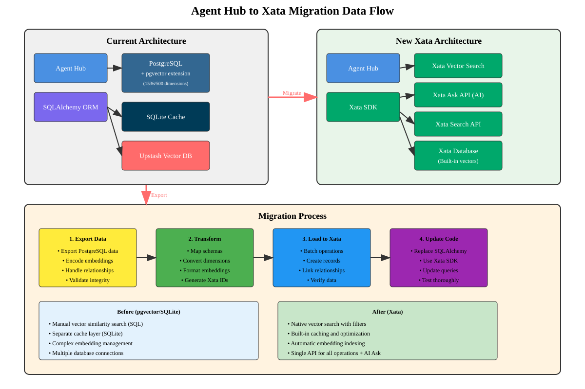

A historical "Agent Hub → Xata Migration Data Flow" artifact, brought into the collab canvas as the starting reference for the live end-to-end traces. Treat every box as a claim to confirm or bust — not as current truth.

⚠️ Why it's dashed/unverified: this predates the monorepo and the roundtable audit. It references "Agent Hub" and a Xata-centric flow; Xata is now dead, and several boxes (Quinuple RAG, etc.) are suspected myths. We keep it because it's the only existing visual of the data path — and it's the perfect foil for the trace exercise.
For each user story we walk this pipeline and cite the real file:line at every
hop; at the RESOURCE hop we flag real vs aspirational (that's where the
myths live). Output = a trustworthy system map. Decisions wait until all three traces are done.
1 · "Ask the board a question" — crown-jewel AI path:
use-mindmap-agent.ts → POST /api/disclosure/mindmap/route.ts → OpenAI Assistants
+ searchDatabase(Xata) + searchExternalResources(Exa) → SSE →
transformStreamResponse → nodes/edges → Zustand → React Flow.
2 · "Seed the board from a known record" — non-AI relational path: timeline/sighting or
?type=events → canvas-entry bridge → use-mindmap.ts + data helpers → @db
read/filter → record→node → board.
3 · "Prometheus chat" — second AI path, different protocol:
POST /api/prometheus/chat (Vercel AI SDK streamText) → tools
(searchUAP, searchExternalResources, researchExternalTopic,
processDocument) → streamed answer → chat state.
Next: trace #1 first (densest, most load-bearing) — pending Liam's pick.